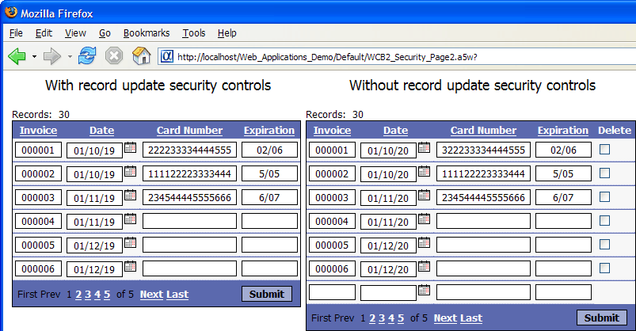

Controlling Record Update
Each grid has three permission properties set in the Update Settings menu. The permission property for a grid is compared to a protected session variable named session.protectedSecurityLevel. Your application code should set this variable to reflect the permissions of the current user.
 Note : A user with
a security level of 0 has unrestricted access.
Any user without an assigned security level has a security level of 0.
Note : A user with
a security level of 0 has unrestricted access.
Any user without an assigned security level has a security level of 0.
Deleting Records
If you want to allow the user to delete records, optionally change the Permissions > Delete security level. Users with a delete security level greater than or equal to this number will be allowed to delete records. If the user is logged on with insufficient Security Levels for delete, then the Delete check box in the grid and the Delete button in the Detail View will not be displayed.
Modifying Records
If you want to allow the user to update records, optionally change the Permissions > Update security level. Users with a update security level greater than or equal to this number will be allowed to edit records. If the user is logged on with insufficient Security Levels for update, delete and insert, then the 'Submit' button on the Grid will not be displayed.
Inserting Records
If you want to allow the user to insert records, optionally change the Permissions > Insert security level. Users with a insert security level greater than or equal to this number will be allowed to insert records. If the user is logged on with an insufficient Security Level then the 'Add' button is in the Detail View will not be displayed.
The picture below shows two versions of the same grid as it would appear to two different users. The user on the left cannot add, delete, or insert records. The user on the right can do any of these update operations.

See Also
Setting Grid Control Properties
Web Application Security Framework and Web Security Framework V10
Limitations
Web publishing applications only.